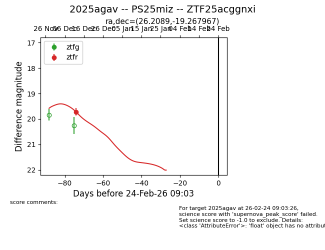
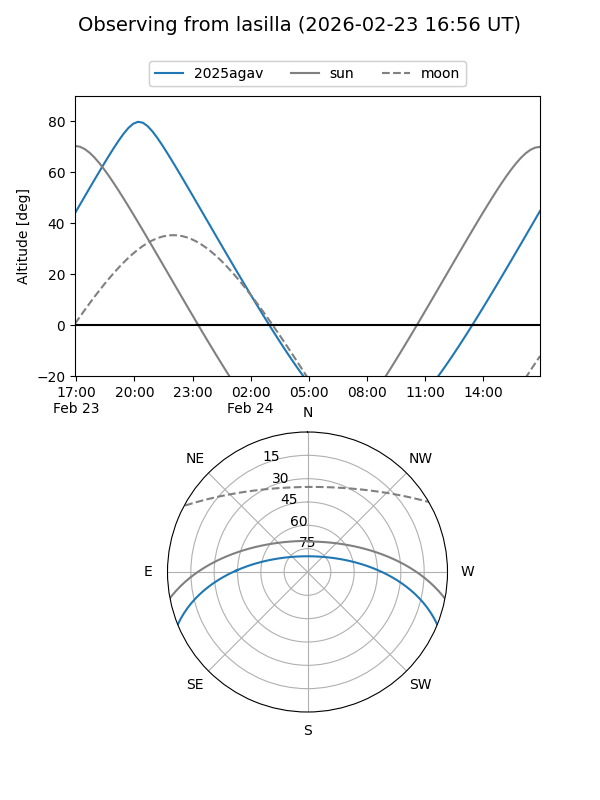
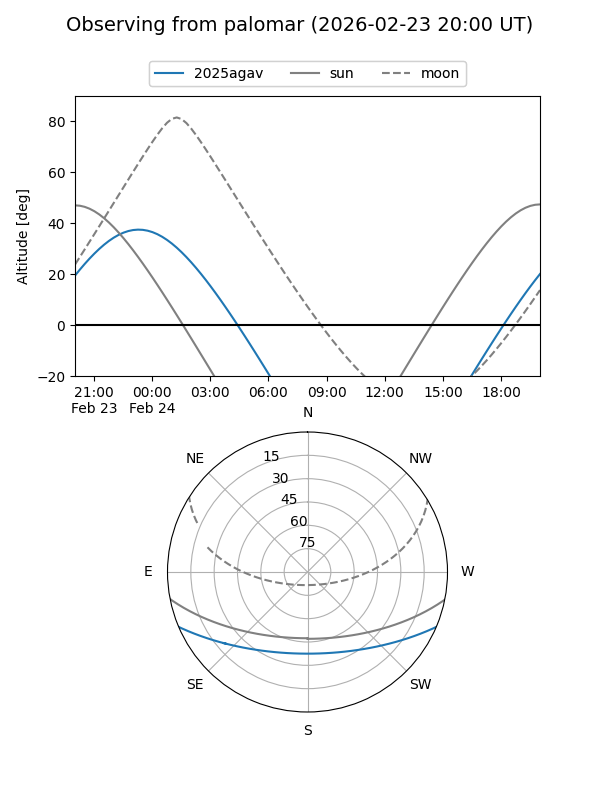
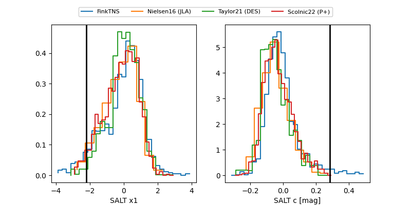

2025agav
Target 2025agav at 2025-12-24 16:17
Aliases and brokers:
FINK: fink-portal.org/ZTF25acggnxi
Lasair: lasair-ztf.lsst.ac.uk/objects/ZTF25acggnxi
ALeRCE: alerce.online/object/ZTF25acggnxi
TNS: wis-tns.org/object/2025agav
YSE: ziggy.ucolick.org/yse/transient_detail/2025agav
alt names
ZTF25acggnxi (ztf,fink_ztf)
2025agav (tns,yse)
Coordinates:
equatorial (ra, dec) = 26.2089,-19.26797
equatorial (HMS+DMS) = 01:44:50.15,-19:16:04.68
galactic (l, b) = (183.0721,-75.44433)
Flags:
Photometry:
last ztfr=19.72
1 ztfr detections
Lightcurve

Visibility


Additional plots
